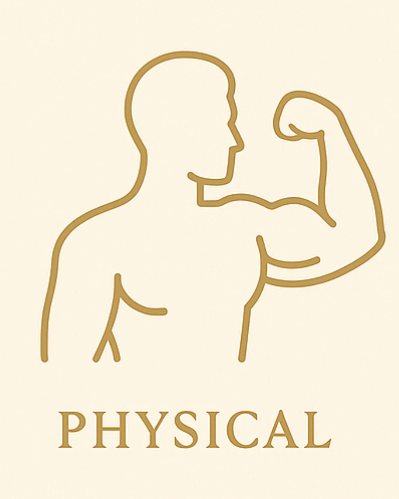

Physical
Build habits that strengthen your body: movement, nutrition, sleep, and recovery. Small decisions compound into long-term energy and health.
Ascend Habits helps you build consistent routines across four powerful pillars: Physical, Intellectual, Social, and Spiritual. Start small, track your progress, and become the person you are meant to be.
Start Creating Habits
Build habits that strengthen your body: movement, nutrition, sleep, and recovery. Small decisions compound into long-term energy and health.
Expand your mind through reading, study, deep work, and constant learning. Your thoughts shape the quality of your decisions.
Strengthen your relationships with intentional communication, empathy, and presence. Great lives are built on meaningful connections.
Create space for stillness, gratitude, reflection, and purpose. Align your daily actions with what truly matters to you.
Select where you want to grow first: body, mind, relationships, or spirit.
Define a small, clear action that you can repeat consistently, not perfectly.
Use the Habits page to log your routines, mark completions, and refine over time.